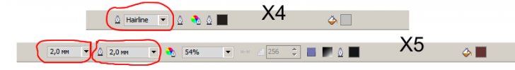

Закрыл файл – Corel в след за ним?
Algis / 23.03.2011, 23:13/00:41
Форум:
Когда то в старой ветке промелькнул вопрос про то, что при закрытии последнего файла вслед за ним закрывается и сам Корел. Но ответа как то там не обнаружил. Интересно, тут только на моей машине Корел так себя ведет, или в X5 так и должно быть. Все таки надоело уже такое поведение программы, может есть какое лечение?
Кстати, если и два файла открыты, но ни один не был "тронут", при закрытии одного из них – Corel – "убегает" в месте со вторым файлом!
Это явно не нормальное поведение программы.
Причина обнаружилась. Corel X5 (15.2.0.661) закрывался из за того, что в строке состояния для удобства было вставлено поле выбора "толщина абриса". При случае надо будет поэкспериментировать и с другими инструментами, вложенными в строку состояния, может еще что замечу.
У меня к примеру вот так и ни чего страшного не происходит :D
Сегодня как раз из за пресловутых "битых" мазков кисти поставил в добавок и свой старый X4, вставил в эту строку поле ввода "Select an outline width or type in a new width" и... старый X4 улетел в след за закрытым файлом?!
Значит это так получается и в Corel X4 и в Corel X5. Все остальные инструменты такого глюка не создают. Правда всех я там не совал, много ведь... Красным на картинке обвел те самые "странные" поля.

Ради интереса поставил Outline Width в панель состояния (в х5) и всё работает как нужно.
Хм... Значить Corel чего то не поделил с Виндозой. Если откопаю что нибудь насчет этого, напишу.